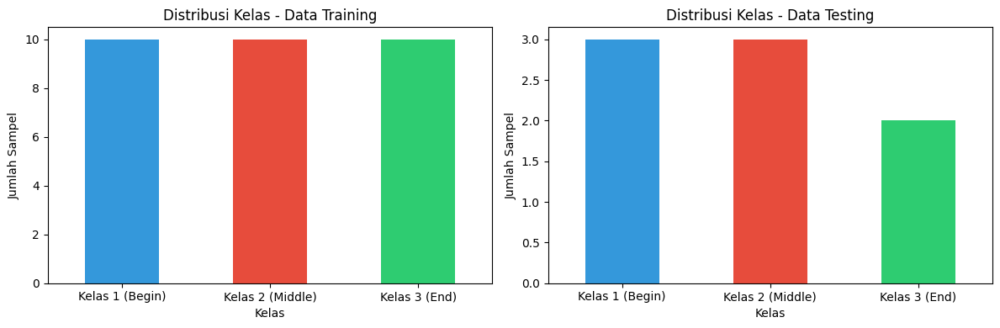
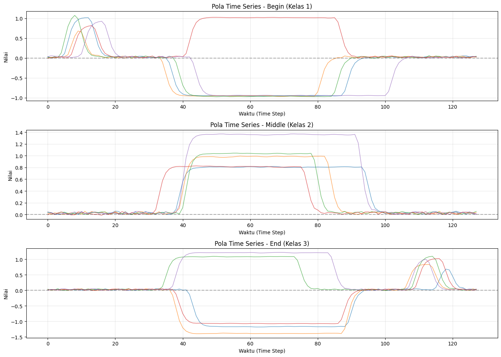
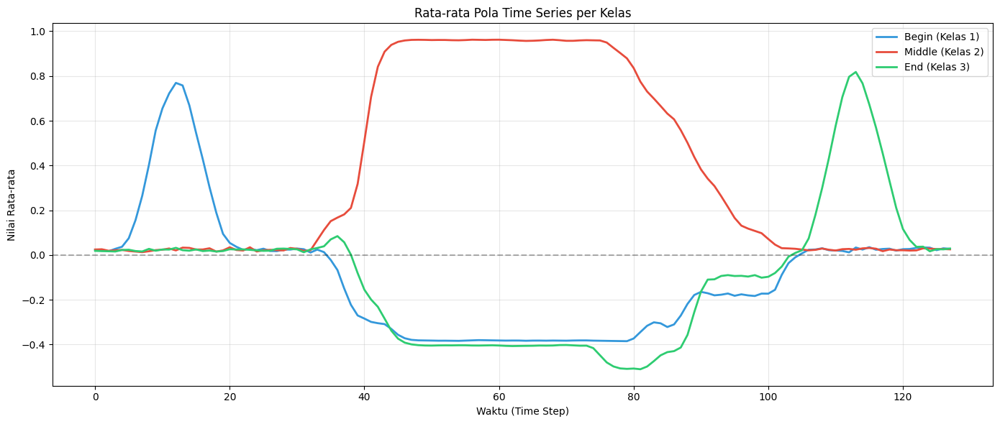

Data Understanding (Klasifikasi Time Series - Dataset BME)#
1. Gambaran Umum Dataset BME#
Dataset BME (Begin–Middle–End) merupakan dataset deret waktu (time series) sintetis dan univariat yang digunakan sebagai salah satu benchmark dalam UCR Time Series Classification Archive. Dataset ini dikembangkan oleh peneliti di Laboratoire d’Informatique de Grenoble (LIG), Université Grenoble Alpes, kemudian diadopsi ke dalam koleksi UCR sebagai salah satu problem klasifikasi deret waktu berdimensi satu.
Tujuan utama dari dataset BME adalah menyediakan contoh dataset yang sederhana namun memiliki struktur pola yang jelas, sehingga sangat cocok untuk menguji algoritma klasifikasi deret waktu, terutama model yang perlu mengenali pergeseran pola sepanjang sumbu waktu (time-shift).
2. Struktur dan Karakteristik Data#
Setiap sampel pada dataset BME memiliki karakteristik sebagai berikut:
Jenis data: deret waktu univariat (satu fitur sinyal per sampel).
Panjang deret waktu: setiap sampel memiliki panjang 128 titik waktu (time steps).
Tipe nilai: berupa bilangan real (float) yang merepresentasikan amplitudo sinyal.
Jumlah kelas: terdapat 3 kelas, yaitu:
Begin
Middle
End
Pembagian data standar (dari UCR Archive):
30 sampel untuk training
150 sampel untuk testing
3. Pola Sinyal pada Tiap Kelas#
Hal yang menarik dari dataset BME adalah bahwa ketiga kelas memiliki bagian tengah (plateau -> Bagian sinyal yang relatif datar, stabil, atau tidak banyak berubah.) yang relatif mirip, sehingga bagian tersebut tidak terlalu informatif untuk membedakan kelas. Justru pola yang membedakan ketiga kelas terletak pada keberadaan dan posisi puncak (peak) dalam sinyal.
Berikut penjelasan pola tiap kelas:
1. Kelas “Begin”#
Mempunyai puncak kecil bernilai positif yang muncul di awal deret waktu.
2. Kelas “Middle”#
Tidak memiliki puncak mencolok di awal ataupun akhir deret waktu.
3. Kelas “End”#
Memiliki puncak positif yang muncul mendekati akhir deret waktu.
Dengan struktur seperti ini, dataset BME sangat berguna untuk menilai apakah model klasifikasi time series mampu:
mengenali pola lokal (local patterns),
membedakan posisi pola, dan
memahami perbedaan bentuk sinyal meskipun sebagian besar sinyal terlihat mirip.
4. Eksplorasi Data (EDA)#
import numpy as np
import pandas as pd
import warnings
warnings.filterwarnings('ignore')
df_train = pd.read_csv('BME_TRAIN.csv')
df_test = pd.read_csv('BME_TEST.csv')
print("=" * 60)
print("INFORMASI DATASET")
print("=" * 60)
print(f"Ukuran data training: {df_train.shape}")
print(f"Ukuran data testing: {df_test.shape}")
============================================================
INFORMASI DATASET
============================================================
Ukuran data training: (30, 129)
Ukuran data testing: (8, 129)
2.1 Melihat struktur data#
import numpy as np
import pandas as pd
import matplotlib.pyplot as plt
import seaborn as sns
print(df_train.head())
att1 att2 att3 att4 att5 att6 att7 \
0 0.037765 0.000253 0.003977 0.020764 0.021731 0.114000 0.414000
1 0.000425 0.020982 0.002526 0.020118 0.037074 0.034782 0.083000
2 0.019856 0.003677 0.035077 0.011545 0.127000 0.462000 0.797000
3 -0.005805 0.002666 0.021716 0.016958 0.027037 0.003596 0.012597
4 0.031380 0.057092 0.047269 0.043872 0.026902 0.037878 0.032261
att8 att9 att10 ... att120 att121 att122 att123 \
0 0.718000 0.889000 0.969000 ... 0.022831 0.013387 0.038907 0.039188
1 0.317000 0.550000 0.680000 ... 0.011228 0.025040 0.044365 0.043476
2 0.985000 1.074000 0.983000 ... 0.017686 0.046659 0.005717 0.019496
3 0.090000 0.338000 0.581000 ... 0.021472 0.005443 0.045583 0.001084
4 0.011465 0.024362 0.039082 ... 0.019191 0.044964 0.014297 0.005419
att124 att125 att126 att127 att128 target
0 0.053617 0.054673 0.031523 0.039787 0.020661 1
1 0.044163 0.021767 0.007789 0.029194 0.021837 1
2 0.021592 0.018680 0.022479 0.032204 0.045187 1
3 0.019091 0.005705 0.003578 0.031542 0.034386 1
4 -0.000230 0.027151 0.029029 0.040782 0.034723 1
[5 rows x 129 columns]
print("\n--- Info Data Training ---")
print(df_train. info())
--- Info Data Training ---
<class 'pandas.core.frame.DataFrame'>
RangeIndex: 30 entries, 0 to 29
Columns: 129 entries, att1 to target
dtypes: float64(128), int64(1)
memory usage: 30.4 KB
None
print("\n--- Statistik Deskriptif Data Training ---")
print(df_train. describe())
--- Statistik Deskriptif Data Training ---
att1 att2 att3 att4 att5 att6 \
count 30.000000 30.000000 30.000000 30.000000 30.000000 30.000000
mean 0.022363 0.022380 0.017579 0.021523 0.027460 0.038957
std 0.016616 0.015708 0.016732 0.016017 0.024676 0.082893
min -0.005805 0.000253 -0.004860 -0.001702 -0.002623 -0.002771
25% 0.009671 0.009333 0.003876 0.011388 0.012567 0.009598
50% 0.026171 0.023152 0.013385 0.019947 0.025269 0.021027
75% 0.034599 0.031089 0.029883 0.035779 0.038971 0.035930
max 0.050930 0.057092 0.055518 0.049456 0.127000 0.462000
att7 att8 att9 att10 ... att120 att121 \
count 30.000000 30.000000 30.000000 30.000000 ... 30.000000 30.000000
mean 0.063086 0.097850 0.149206 0.199273 ... 0.084038 0.054656
std 0.157943 0.228752 0.284140 0.322203 ... 0.154788 0.090493
min -0.006197 -0.009974 -0.003928 -0.003808 ... -0.001929 -0.006021
25% 0.009156 0.010639 0.015659 0.013061 ... 0.017601 0.016894
50% 0.019289 0.018578 0.028827 0.032454 ... 0.028445 0.025618
75% 0.033545 0.027659 0.097134 0.325063 ... 0.047560 0.046235
max 0.797000 0.985000 1.074000 0.983000 ... 0.656000 0.448000
att122 att123 att124 att125 att126 att127 \
count 30.000000 30.000000 30.000000 30.000000 30.000000 30.000000
mean 0.038098 0.029739 0.033757 0.026087 0.024867 0.027402
std 0.042465 0.020657 0.018393 0.014531 0.014107 0.013038
min -0.004071 0.001084 -0.001404 -0.000725 0.002165 -0.001504
25% 0.011990 0.015571 0.022403 0.018791 0.013378 0.018110
50% 0.038589 0.027148 0.036087 0.022159 0.024131 0.030640
75% 0.046734 0.042268 0.043166 0.040070 0.038049 0.035820
max 0.222000 0.099000 0.086371 0.054673 0.044714 0.051910
att128 target
count 30.000000 30.000000
mean 0.027329 2.000000
std 0.015173 0.830455
min -0.005816 1.000000
25% 0.015162 1.000000
50% 0.028903 2.000000
75% 0.039106 3.000000
max 0.053829 3.000000
[8 rows x 129 columns]
2.2 Cek Missing Values#
missing_train = df_train. isnull().sum(). sum()
missing_test = df_test. isnull().sum().sum()
print(f"Missing values di data training: {missing_train}")
print(f"Missing values di data testing: {missing_test}")
Missing values di data training: 0
Missing values di data testing: 0
2.3 Distribusi Kelas Target#
print("Data Training:")
print(df_train['target'].value_counts(). sort_index())
print("\nData Testing:")
print(df_test['target']. value_counts().sort_index())
# Visualisasi distribusi kelas
fig, axes = plt.subplots(1, 2, figsize=(12, 4))
ax1 = axes[0]
df_train['target']. value_counts().sort_index().plot(kind='bar', ax=ax1, color=['#3498db', '#e74c3c', '#2ecc71'])
ax1. set_title('Distribusi Kelas - Data Training')
ax1.set_xlabel('Kelas')
ax1.set_ylabel('Jumlah Sampel')
ax1.set_xticklabels(['Kelas 1 (Begin)', 'Kelas 2 (Middle)', 'Kelas 3 (End)'], rotation=0)
ax2 = axes[1]
df_test['target'].value_counts().sort_index(). plot(kind='bar', ax=ax2, color=['#3498db', '#e74c3c', '#2ecc71'])
ax2. set_title('Distribusi Kelas - Data Testing')
ax2.set_xlabel('Kelas')
ax2. set_ylabel('Jumlah Sampel')
ax2.set_xticklabels(['Kelas 1 (Begin)', 'Kelas 2 (Middle)', 'Kelas 3 (End)'], rotation=0)
plt.tight_layout()
plt. show()
Data Training:
target
1 10
2 10
3 10
Name: count, dtype: int64
Data Testing:
target
1 3
2 3
3 2
Name: count, dtype: int64

2.4 Visualisasi Pola Time Series per Kelas#
class_names = {1: 'Begin (Kelas 1)', 2: 'Middle (Kelas 2)', 3: 'End (Kelas 3)'}
fig, axes = plt.subplots(3, 1, figsize=(14, 10))
for idx, kelas in enumerate([1, 2, 3]):
ax = axes[idx]
samples = df_train[df_train['target'] == kelas]. iloc[:5, :-1]
for i in range(len(samples)):
ax. plot(samples.iloc[i]. values, alpha=0.7, linewidth=1)
ax.set_title(f'Pola Time Series - {class_names[kelas]}')
ax.set_xlabel('Waktu (Time Step)')
ax. set_ylabel('Nilai')
ax.grid(True, alpha=0.3)
ax. axhline(y=0, color='black', linestyle='--', alpha=0.3)
plt.tight_layout()
plt. show()

2.5 Rata-rata Pola Time Series per Kelas#
fig, ax = plt.subplots(figsize=(14, 6))
colors = ['#3498db', '#e74c3c', '#2ecc71']
for idx, kelas in enumerate([1, 2, 3]):
mean_pattern = df_train[df_train['target'] == kelas]. iloc[:, :-1].mean()
ax. plot(mean_pattern.values, label=class_names[kelas], color=colors[idx], linewidth=2)
ax.set_title('Rata-rata Pola Time Series per Kelas')
ax.set_xlabel('Waktu (Time Step)')
ax.set_ylabel('Nilai Rata-rata')
ax.legend()
ax.grid(True, alpha=0.3)
ax.axhline(y=0, color='black', linestyle='--', alpha=0.3)
plt.tight_layout()
plt. show()
